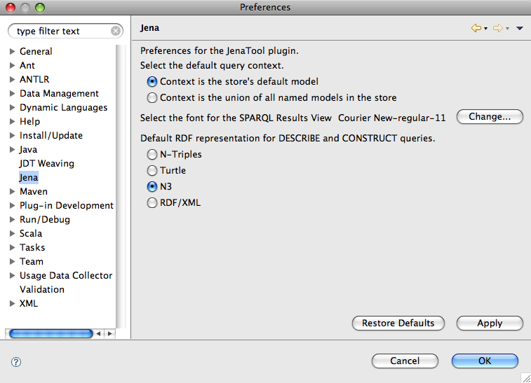

JenaTool Preferences
Some features of JenaTool are configurable via a standard Eclipse preference
pane, this pane is shown in the figure below.

The following describes these properties in more detail.
- Query Context
-
This defines the context, the set of graphs, over which a query will run. Options
include simply the default graph in the store or the union of all named graphs in
the store.
- SPARQL Results Font
-
Sets the font for the SPARQL Results View, typically this is a monospaced font
for clarity reading table generated by SELECT queries.
- Default RDF Representation
-
Select the output format to use for those query forms that return an RDF Graph.
For example, SELECT queries return tabular data but a DESCRIBE or a CONSTRUCT
will return data as a graph and this property allows you to set the manner in
which the graph is displayed in the results view.